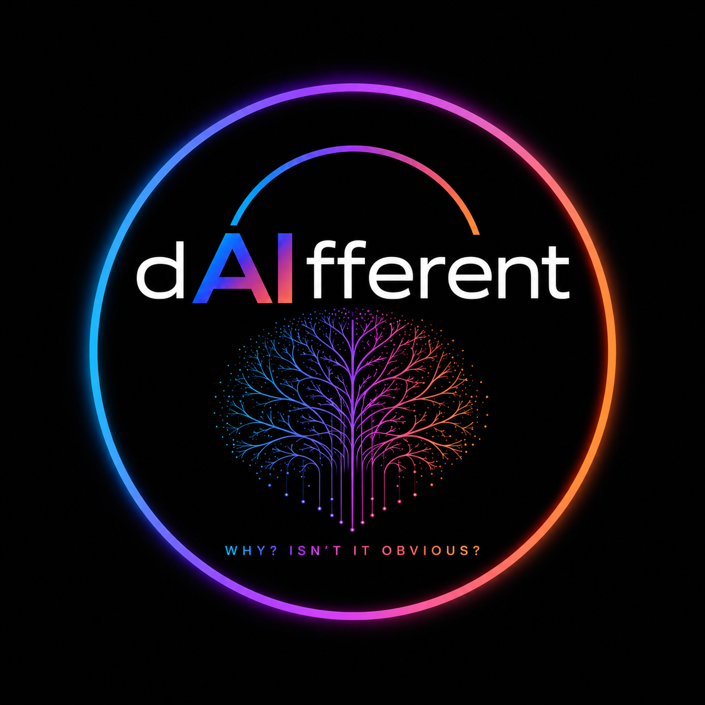

AI-ASSISTED CASE ARCHIVE
Search investigative theories, abduction theories, alternative explanations, suspect theories, and unresolved questions.
Ask anything about theories and competing explanations.